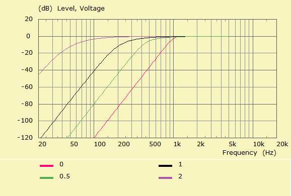
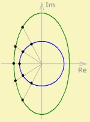

| Identifier | Param= | |
| Units | dB | |
| Format | String | Floating-point number |
| Purpose | Parameters passed to DLL. | Parameter of Butterworth-Thomson alignment. |
| Used in | Def_Element | Filter |
Param= belongs to the parameter-set of standard filter alignments.


If the alignment is set to BT then a transfer function with a Butterworth-Thomson alignment is created.Param= interpolates between the BU- and BE-poles. If Param=0 we create a Butterworth alignment. With Param=1 a Bessel function. Values beyond Param>1 will extrapolate the poles.